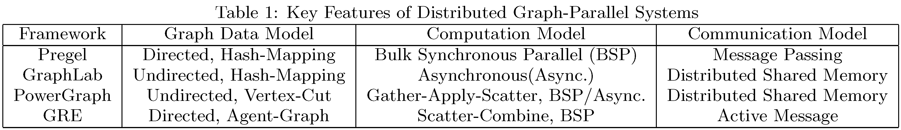

What's GRE?
GRE (Graph Runtime Engine) is a distributed graph-parallel computing platform written in C++. It is designed for processing emerging graphs with billions of vertices and edges on today's cluster systems. Compared to counterpart systems, GRE shows considerable performance advantage in our experiments, e.g. 2.5∼17 times better on 8∼16 machines (192 cores) than PowerGraph.
An Overview of GRE
GRE proposes Scatter-Combine abstraction to model the graph-parallel computation. Scatter-Combine is a data-flow approach based on active message. The active message mechanism can express and efficiently map massive fine-grained edge-level parallelism to underlying cluster systems of hybrid distributed memory and shared memory.
Programming with GRE is very convenient. GRE provides a simple but expressive API to instantiate Scatter-Combine computation and implement graph-parallel algorithms. As an example, one can refer to implementation of Page Rank.
Closely coupled Scatter-Combine abstraction, GRE proposes Agent-Graph to partition and represent a graph in the distributed form. Agent-Graph has much lower communication needs than either traditional edge-cut partitioning method or GraphLab's vertex-cut model.
To support abstractions of Scatter-Combine and Agent-Graph, GRE implements a high performance runtime system. Currently, GRE runtime provides a BSP execution engine. Its Key features include:
- Column-Oriented Storage of graph properties.
- One-sided active message communication.
- Fine-grained parallelism and data synchronization on multi-core processors.
A technical comparison of GRE and its counterparts
Besides GRE, there have been several other graph-parallel platforms. As a comparison, we summarize key features of these systems in Table 1.
